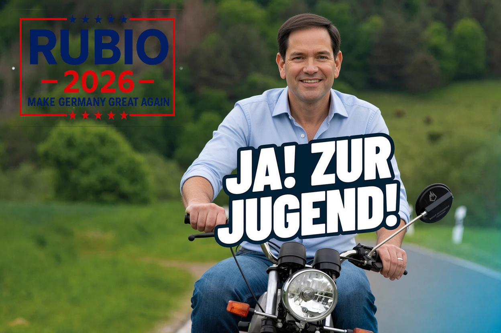
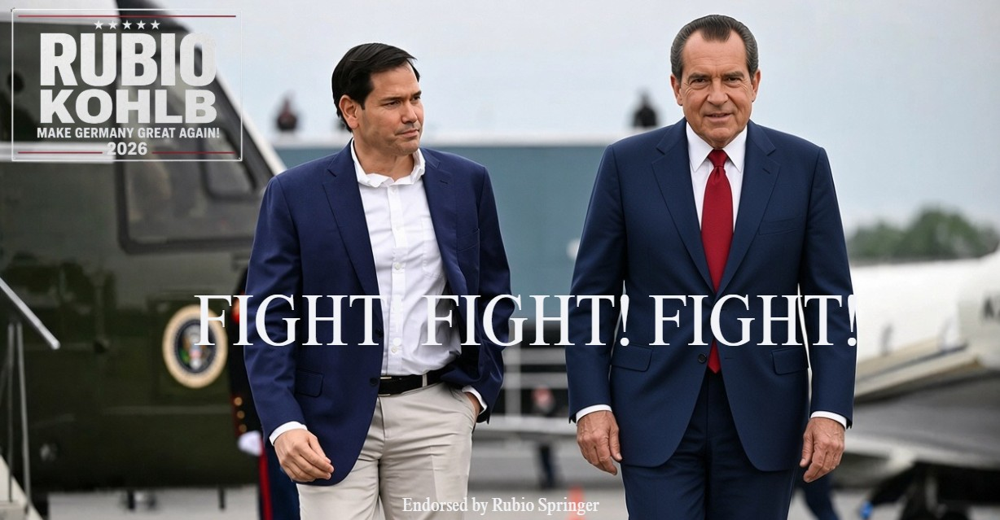

Remo Rubio Springer
„Wir müssen die verfassungsmäßigen Rechte sowie Meinungs-, Vereinigungs- und Versammlungsfreiheit achten.“
Springer verbindet sein Bundestagsmandat und seine juristische Berufserfahrung mit einer kommunikationsstarken Rolle in der Parteileitung des BÜNDNIS.
Politisches Profil
Remo Rubio Springer ist Rechtsanwalt, Mitglied des Deutschen Bundestages, Mitglied des Republikanischen Bündnisses und Kandidat der Partei für die kommende Bundestagswahl. Er war zuvor Mitglied der BSV und gehört trotz seines Parteiwechsels weiterhin deren Bundestagsfraktion an.
In der Parteileitung arbeitet Springer als Rechtsexperte und kommunikationsstarker Ansprechpartner. Zugleich gehört er gemeinsam mit den weiteren republikanischen Abgeordneten zur Gruppe „Republikaner im Bundestag“. Sein bestehendes Mandat bleibt sein persönliches Bundestagsmandat.
Kampagnenmaterial
Ausgewählte Motive aus dem laufenden Bundestagswahlkampf.


Persönliche Äußerungen einzelner Kandidaten oder Funktionsträger stellen nicht automatisch eine offizielle Position des Republikanischen Bündnisses dar. Verbindliche Parteipositionen ergeben sich aus dem beschlossenen Programm, offiziellen Beschlüssen und ausdrücklich als solche gekennzeichneten Erklärungen der zuständigen Parteigremien.